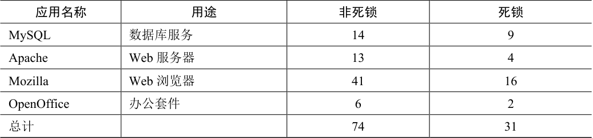
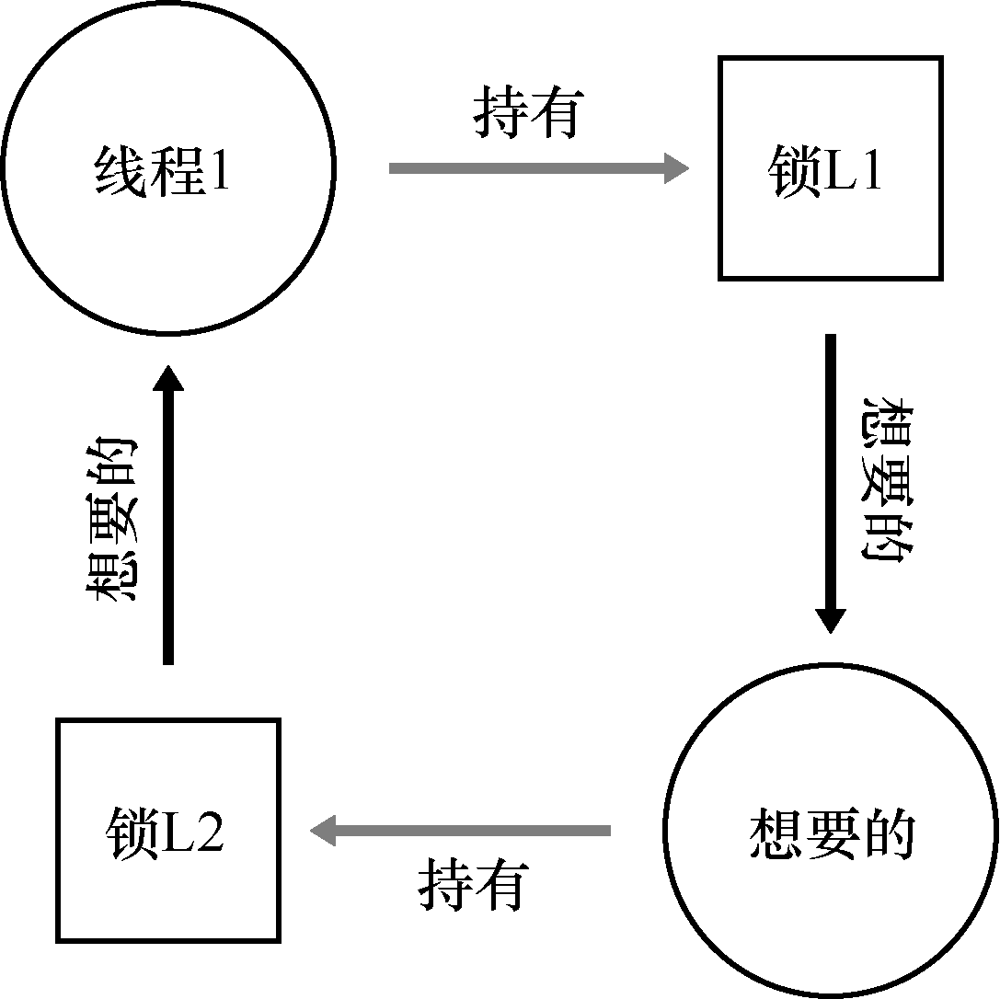
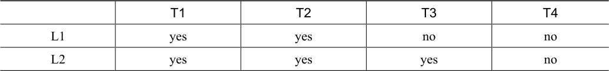
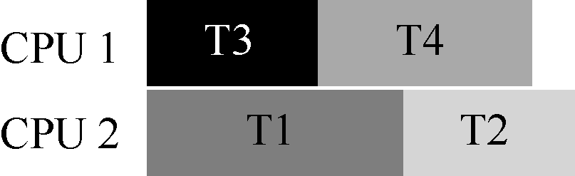
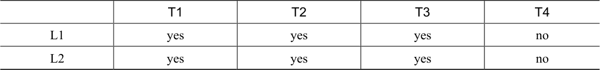
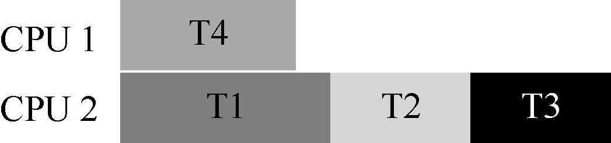

多年来，研究人员花了大量的时间和精力研究并发编程的缺陷。很多早期的工作是关于死锁的，之前的章节也有提及，本章会深入学习[C+71]。最近的研究集中在一些其他类型的常见并发缺陷（即非死锁缺陷）。在本章中，我们会简要了解一些并发问题的例子，以便更好地理解要注意什么问题。因此，本章的关键问题就是：
关键问题：如何处理常见的并发缺陷
并发缺陷会有很多常见的模式。了解这些模式是写出健壮、正确程序的第一步。
32.1 有哪些类型的缺陷¶
第一个最明显的问题就是：在复杂并发程序中，有哪些类型的缺陷呢？一般来说，这个问题很难回答，好在其他人已经做过相关的工作。具体来说，Lu 等人[L+08]详细分析了一些流行的并发应用，以理解实践中有哪些类型的缺陷。
研究集中在4 个重要的开源应用：MySQL（流行的数据库管理系统）、Apache（著名的Web 服务器）、Mozilla（著名的Web 浏览器）和OpenOffice（微软办公套件的开源版本）。研究人员通过检查这几个代码库已修复的并发缺陷，将开发者的工作变成量化的缺陷分析。理解这些结果，有助于我们了解在成熟的代码库中，实际出现过哪些类型的并发问题。
表32.1 是Lu 及其同事的研究结论。可以看出，共有105 个缺陷，其中大多数是非死锁相关的（74 个），剩余31 个是死锁缺陷。另外，可以看出每个应用的缺陷数目，OpenOffice只有8 个，而Mozilla 有接近60 个。

表32.1 现代应用程序的缺陷统计
表格文字
| 应用名称 | 用途 | 非死锁 | 死锁 |
|---|---|---|---|
| MySQL | 数据库服务 | 14 | 9 |
| Apache | Web 服务器 | 13 | 4 |
| Mozilla | Web 浏览器 | 41 | 16 |
| OpenOffice | 办公套件 | 6 | 2 |
| 总计 | 74 | 31 |
我们现在来深入分析这两种类型的缺陷。对于第一类非死锁的缺陷，我们通过该研究的例子来讨论。对于第二类死锁缺陷，我们讨论人们在阻止、避免和处理死锁上完成的大量工作。
32.2 非死锁缺陷¶
Lu 的研究表明，非死锁问题占了并发问题的大多数。它们是怎么发生的？我们如何修复？我们现在主要讨论其中两种：违反原子性（atomicity violation）缺陷和错误顺序（order violation）缺陷。
违反原子性缺陷¶
第一种类型的问题叫作违反原子性。这是一个MySQL 中出现的例子。读者可以先自行找出其中问题所在。
Thread 1::
if (thd->proc_info) {
...
fputs(thd->proc_info, ...);
...
}
Thread 2::
thd->proc_info = NULL;
这个例子中，两个线程都要访问thd 结构中的成员proc_info。第一个线程检查proc_info非空，然后打印出值；第二个线程设置其为空。显然，当第一个线程检查之后，在fputs()调用之前被中断，第二个线程把指针置为空；当第一个线程恢复执行时，由于引用空指针，导致程序奔溃。
根据Lu 等人，更正式的违反原子性的定义是：“违反了多次内存访问中预期的可串行性（即代码段本意是原子的，但在执行中并没有强制实现原子性）”。在我们的例子中，proc_info 的非空检查和fputs()调用打印proc_info 是假设原子的，当假设不成立时，代码就出问题了。
这种问题的修复通常（但不总是）很简单。你能想到如何修复吗？
在这个方案中，我们只要给共享变量的访问加锁，确保每个线程访问proc_info 字段时，都持有锁（proc_info_lock）。当然，访问这个结构的所有其他代码，也应该先获取锁。
pthread_mutex_t proc_info_lock = PTHREAD_MUTEX_INITIALIZER;
Thread 1::
pthread_mutex_lock(&proc_info_lock);
if (thd->proc_info) {
...
fputs(thd->proc_info, ...);
...
}
pthread_mutex_unlock(&proc_info_lock);
Thread 2::
pthread_mutex_lock(&proc_info_lock);
thd->proc_info = NULL;
pthread_mutex_unlock(&proc_info_lock);
违反顺序缺陷¶
Lu 等人提出的另一种常见的非死锁问题叫作违反顺序（order violation）。下面是一个简单的例子。同样，看看你是否能找出为什么下面的代码有缺陷。
Thread 1::
void init() {
...
mThread = PR_CreateThread(mMain, ...);
...
}
Thread 2::
void mMain(...) {
...
mState = mThread->State;
...
}
你可能已经发现，线程2 的代码中似乎假定变量mThread 已经被初始化了（不为空）。然而，如果线程1 并没有首先执行，线程2 就可能因为引用空指针奔溃（假设mThread初始值为空；否则，可能会产生更加奇怪的问题，因为线程2 中会读到任意的内存位置并引用）。
违反顺序更正式的定义是：“两个内存访问的预期顺序被打破了（即A 应该在B 之前执行，但是实际运行中却不是这个顺序）”[L+08]。
我们通过强制顺序来修复这种缺陷。正如之前详细讨论的，条件变量（condition variables）就是一种简单可靠的方式，在现代代码集中加入这种同步。在上面的例子中，我们可以把代码修改成这样：
pthread_mutex_t mtLock = PTHREAD_MUTEX_INITIALIZER;
pthread_cond_t mtCond = PTHREAD_COND_INITIALIZER;
int mtInit = 0;
Thread 1::
void init() {
...
mThread = PR_CreateThread(mMain, ...);
// signal that the thread has been created...
pthread_mutex_lock(&mtLock);
mtInit = 1;
pthread_cond_signal(&mtCond);
pthread_mutex_unlock(&mtLock);
...
}
Thread 2::
void mMain(...) {
...
// wait for the thread to be initialized...
pthread_mutex_lock(&mtLock);
while (mtInit == 0)
pthread_cond_wait(&mtCond, &mtLock);
pthread_mutex_unlock(&mtLock);
mState = mThread->State;
...
}
在这段修复的代码中，我们增加了一个锁（mtLock）、一个条件变量（mtCond）以及状态的变量（mtInit）。初始化代码运行时，会将mtInit 设置为1，并发出信号表明它已做了这件事。如果线程2 先运行，就会一直等待信号和对应的状态变化；如果后运行，线程2 会检查是否初始化（即mtInit 被设置为1），然后正常运行。请注意，我们可以用mThread 本身作为状态变量，但为了简洁，我们没有这样做。当线程之间的顺序很重要时，条件变量（或信号量）能够解决问题。
非死锁缺陷：小结¶
Lu 等人的研究中，大部分（97%）的非死锁问题是违反原子性和违反顺序这两种。因此，程序员仔细研究这些错误模式，应该能够更好地避免它们。此外，随着更自动化的代码检查工具的发展，它们也应该关注这两种错误，因为开发中发现的非死锁问题大部分都是这两种。
然而，并不是所有的缺陷都像我们举的例子一样，这么容易修复。有些问题需要对应用程序的更深的了解，以及大量代码及数据结构的调整。阅读Lu 等人的优秀（可读性强）的论文，了解更多细节。
32.3 死锁缺陷¶
除了上面提到的并发缺陷，死锁（deadlock）是一种在许多复杂并发系统中出现的经典问题。例如，当线程1 持有锁L1，正在等待另外一个锁L2，而线程2 持有锁L2，却在等待锁L1 释放时，死锁就产生了。以下的代码片段就可能出现这种死锁：
Thread 1: Thread 2:
lock(L1); lock(L2);
lock(L2); lock(L1);
这段代码运行时，不是一定会出现死锁的。当线程1 占有锁L1，上下文切换到线程2。线程2 锁住L2，试图锁住L1。这时才产生了死锁，两个线程互相等待。如图32.1 所示，其中的圈（cycle）表明了死锁。

图32.1 死锁依赖图
该图应该有助于描述清楚问题。程序员在编写代码中应该如何处理死锁呢？
关键问题：如何对付死锁
我们在实现系统时，如何避免或者能够检测、恢复死锁呢？这是目前系统中的真实问题吗？
为什么发生死锁¶
你可能在想，上文提到的这个死锁的例子，很容易就可以避免。例如，只要线程1 和线程2 都用相同的抢锁顺序，死锁就不会发生。那么，死锁为什么还会发生？
其中一个原因是在大型的代码库里，组件之间会有复杂的依赖。以操作系统为例。虚拟内存系统在需要访问文件系统才能从磁盘读到内存页；文件系统随后又要和虚拟内存交互，去申请一页内存，以便存放读到的块。因此，在设计大型系统的锁机制时，你必须要仔细地去避免循环依赖导致的死锁。
另一个原因是封装（encapsulation）。软件开发者一直倾向于隐藏实现细节，以模块化的方式让软件开发更容易。然而，模块化和锁不是很契合。Jula 等人指出[J+08]，某些看起来没有关系的接口可能会导致死锁。以Java 的Vector 类和AddAll()方法为例，我们这样调用这个方法：
Vector v1, v2;
v1.AddAll(v2);
在内部，这个方法需要多线程安全，因此针对被添加向量（v1）和参数（v2）的锁都需要获取。假设这个方法，先给v1 加锁，然后再给v2 加锁。如果另外某个线程几乎同时在调用v2.AddAll(v1)，就可能遇到死锁。
产生死锁的条件¶
死锁的产生需要如下4 个条件[C+71]。
互斥：线程对于需要的资源进行互斥的访问（例如一个线程抢到锁）。
持有并等待：线程持有了资源（例如已将持有的锁），同时又在等待其他资源（例
如，需要获得的锁）。
非抢占：线程获得的资源（例如锁），不能被抢占。
循环等待：线程之间存在一个环路，环路上每个线程都额外持有一个资源，而这
个资源又是下一个线程要申请的。
如果这4 个条件的任何一个没有满足，死锁就不会产生。因此，我们首先研究一下预防死锁的方法；每个策略都设法阻止某一个条件，从而解决死锁的问题。
预防¶
循环等待
也许最实用的预防技术（当然也是经常采用的），就是让代码不会产生循环等待。最直接的方法就是获取锁时提供一个全序（total ordering）。假如系统共有两个锁（L1 和L2），那么我们每次都先申请L1 然后申请L2，就可以避免死锁。这样严格的顺序避免了循环等待，也就不会产生死锁。
当然，更复杂的系统中不会只有两个锁，锁的全序可能很难做到。因此，偏序（partial ordering）可能是一种有用的方法，安排锁的获取并避免死锁。Linux 中的内存映射代码就是一个偏序锁的好例子[T+94]。代码开头的注释表明了10 组不同的加锁顺序，包括简单的关系，比如i_mutex 早于i_mmap_mutex，也包括复杂的关系，比如i_mmap_mutex 早于private_lock，早于swap_lock，早于mapping->tree_lock。
你可以想到，全序和偏序都需要细致的锁策略的设计和实现。另外，顺序只是一种约定，粗心的程序员很容易忽略，导致死锁。最后，有序加锁需要深入理解代码库，了解各种函数的调用关系，即使一个错误，也会导致“D”字1。
提示：通过锁的地址来强制锁的顺序
当一个函数要抢多个锁时，我们需要注意死锁。比如有一个函数：do_something(mutex t *m1, mutex t *m2)，如果函数总是先抢m1，然后m2，那么当一个线程调用do_something(L1, L2)，而另一个线程调用do_something(L2, L1)时，就可能会产生死锁。
为了避免这种特殊问题，聪明的程序员根据锁的地址作为获取锁的顺序。按照地址从高到低，或者从低到高的顺序加锁，do_something()函数就可以保证不论传入参数是什么顺序，函数都会用固定的顺序加锁。具体的代码如下：
if (m1 > m2) { // grab locks in high-to-low address order
pthread_mutex_lock(m1);
pthread_mutex_lock(m2);
} else {
pthread_mutex_lock(m2);
pthread_mutex_lock(m1);
}
// Code assumes that m1 != m2 (it is not the same lock)
在获取多个锁时，通过简单的技巧，就可以确保简单有效的无死锁实现。
持有并等待
死锁的持有并等待条件，可以通过原子地抢锁来避免。实践中，可以通过如下代码来实现：
lock(prevention);
lock(L1);
lock(L2);
...
unlock(prevention);
先抢到prevention 这个锁之后，代码保证了在抢锁的过程中，不会有不合时宜的线程切换，从而避免了死锁。当然，这需要任何线程在任何时候抢占锁时，先抢到全局的prevention锁。例如，如果另一个线程用不同的顺序抢锁L1 和L2，也不会有问题，因为此时，线程已经抢到了prevention 锁。
注意，出于某些原因，这个方案也有问题。和之前一样，它不适用于封装：因为这个方案需要我们准确地知道要抢哪些锁，并且提前抢到这些锁。因为要提前抢到所有锁（同时），而不是在真正需要的时候，所以可能降低了并发。
非抢占
在调用unlock 之前，都认为锁是被占有的，多个抢锁操作通常会带来麻烦，因为我们等待一个锁时，同时持有另一个锁。很多线程库提供更为灵活的接口来避免这种情况。具体来说，trylock()函数会尝试获得锁，或者返回−1，表示锁已经被占有。你可以稍后重试一下。
可以用这一接口来实现无死锁的加锁方法：
top:
lock(L1);
if (trylock(L2) == -1) {
unlock(L1);
goto top;
}
注意，另一个线程可以使用相同的加锁方式，但是不同的加锁顺序（L2 然后L1），程序仍然不会产生死锁。但是会引来一个新的问题：活锁（livelock）。两个线程有可能一直重复这一序列，又同时都抢锁失败。这种情况下，系统一直在运行这段代码（因此不是死锁），但是又不会有进展，因此名为活锁。也有活锁的解决方法：例如，可以在循环结束的时候，先随机等待一个时间，然后再重复整个动作，这样可以降低线程之间的重复互相干扰。
关于这个方案的最后一点：使用trylock 方法可能会有一些困难。第一个问题仍然是封装：如果其中的某一个锁，是封装在函数内部的，那么这个跳回开始处就很难实现。如果代码在中途获取了某些资源，必须要确保也能释放这些资源。例如，在抢到L1 后，我们的代码分配了一些内存，当抢L2 失败时，并且在返回开头之前，需要释放这些内存。当然，在某些场景下（例如，之前提到的Java 的vector 方法），这种方法很有效。
互斥
最后的预防方法是完全避免互斥。通常来说，代码都会存在临界区，因此很难避免互斥。那么我们应该怎么做呢？
Herlihy 提出了设计各种无等待（wait-free）数据结构的思想[H91]。想法很简单：通过强大的硬件指令，我们可以构造出不需要锁的数据结构。
举个简单的例子，假设我们有比较并交换（compare-and-swap）指令，是一种由硬件提供的原子指令，做下面的事：
int CompareAndSwap(int *address, int expected, int new) {
if (*address == expected) {
*address = new;
return 1; // success
}
return 0; // failure
}
假定我们想原子地给某个值增加特定的数量。我们可以这样实现：
void AtomicIncrement(int *value, int amount) {
do {
int old = *value;
} while (CompareAndSwap(value, old, old + amount) == 0);
}
无须获取锁，更新值，然后释放锁这些操作，我们使用比较并交换指令，反复尝试将值更新到新的值。这种方式没有使用锁，因此不会有死锁（有可能产生活锁）。
我们来考虑一个更复杂的例子：链表插入。这是在链表头部插入元素的代码：
void insert(int value) {
node_t *n = malloc(sizeof(node_t));
assert(n != NULL);
n->value = value;
n->next = head;
head = n;
}
这段代码在多线程同时调用的时候，会有临界区（看看你是否能弄清楚原因）。当然，我们可以通过给相关代码加锁，来解决这个问题：
void insert(int value) {
node_t *n = malloc(sizeof(node_t));
assert(n != NULL);
n->value = value;
lock(listlock); // begin critical section
n->next = head;
head = n;
unlock(listlock); // end of critical section
}
上面的方案中，我们使用了传统的锁2。这里我们尝试用比较并交换指令（compare-and-swap)来实现插入操作。一种可能的实现是：
void insert(int value) {
node_t *n = malloc(sizeof(node_t));
assert(n != NULL);
n->value = value;
do {
n->next = head;
} while (CompareAndSwap(&head, n->next, n) == 0);
}
这段代码，首先把next 指针指向当前的链表头（head），然后试着把新节点交换到链表头。但是，如果此时其他的线程成功地修改了head 的值，这里的交换就会失败，导致这个线程根据新的head 值重试。
当然，只有插入操作是不够的，要实现一个完善的链表还需要删除、查找等其他工作。如果你有兴趣，可以去查阅关于无等待同步的丰富文献。
通过调度避免死锁¶
除了死锁预防，某些场景更适合死锁避免（avoidance）。我们需要了解全局的信息，包括不同线程在运行中对锁的需求情况，从而使得后续的调度能够避免产生死锁。
例如，假设我们需要在两个处理器上调度4 个线程。更进一步，假设我们知道线程1（T1）需要用锁L1 和L2，T2 也需要抢L1 和L2，T3 只需要L2，T4 不需要锁。我们用表32.2 来表示线程对锁的需求。

表32.2 线程对锁的需求
表格文字
| T1 | T2 | T3 | T4 | |
|---|---|---|---|---|
| L1 | yes | yes | no | no |
| L2 | yes | yes | yes | no |
一种比较聪明的调度方式是，只要T1 和T2 不同时运行，就不会产生死锁。下面就是这种方式：

原书第 287 页图示 1
请注意，T3 和T1 重叠，或者和T2 重叠都是可以的。虽然T3 会抢占锁L2，但是由于它只用到一把锁，和其他线程并发执行都不会产生死锁。
我们再来看另一个竞争更多的例子。在这个例子中，对同样的资源（又是锁L1 和L2）有更多的竞争。锁和线程的竞争如表32.3 所示。

表32.3 锁和线程的竞争
表格文字
| T1 | T2 | T3 | T4 | |
|---|---|---|---|---|
| L1 | yes | yes | yes | no |
| L2 | yes | yes | yes | no |
特别是，线程T1、T2 和T3 执行过程中，都需要持有锁L1 和L2。下面是一种不会产生死锁的可行方案：

原书第 288 页图示 1
你可以看到，T1、T2 和T3 运行在同一个处理器上，这种保守的静态方案会明显增加完成任务的总时间。尽管有可能并发运行这些任务，但为了避免死锁，我们没有这样做，付出了性能的代价。
Dijkstra 提出的银行家算法[D64]是一种类似的著名解决方案，文献中也描述了其他类似的方案。遗憾的是，这些方案的适用场景很局限。例如，在嵌入式系统中，你知道所有任务以及它们需要的锁。另外，和上文的第二个例子一样，这种方法会限制并发。因此，通过调度来避免死锁不是广泛使用的通用方案。
检查和恢复¶
最后一种常用的策略就是允许死锁偶尔发生，检查到死锁时再采取行动。举个例子，如果一个操作系统一年死机一次，你会重启系统，然后愉快地（或者生气地）继续工作。如果死锁很少见，这种不是办法的办法也是很实用的。
提示：不要总是完美（TOM WEST 定律）
Tom West 是经典的计算机行业小说《Soul of a New Machine》[K81]的主人公，有一句很棒的工程格言：“不是所有值得做的事情都值得做好”。如果坏事很少发生，并且造成的影响很小，那么我们不应该去花费大量的精力去预防它。当然，如果你在制造航天飞机，事故会导致航天飞机爆炸，那么你应该忽略这个建议。
很多数据库系统使用了死锁检测和恢复技术。死锁检测器会定期运行，通过构建资源图来检查循环。当循环（死锁）发生时，系统需要重启。如果还需要更复杂的数据结构相关的修复，那么需要人工参与。
读者可以在其他地方找到更多的关于数据库并发、死锁和相关问题的资料[B+87，K87]。阅读这些著作，当然最好可以通过学习数据库的课程，深入地了解这一有趣而且丰富的主题。
32.4 小结¶
在本章中，我们学习了并发编程中出现的缺陷的类型。第一种是非常常见的，非死锁缺陷，通常也很容易修复。这种问题包括：违法原子性，即应该一起执行的指令序列没有一起执行；违反顺序，即两个线程所需的顺序没有强制保证。
同时，我们简要地讨论了死锁：为何会发生，以及如何处理。这个问题几乎和并发一样古老，已经有成百上千的相关论文了。实践中是自行设计抢锁的顺序，从而避免死锁发生。无等待的方案也很有希望，在一些通用库和系统中，包括Linux，都已经有了一些无等待的实现。然而，这种方案不够通用，并且设计一个新的无等待的数据结构极其复杂，以至于不够实用。也许，最好的解决方案是开发一种新的并发编程模型：在类似MapReduce（来自Google）[GD02]这样的系统中，程序员可以完成一些类型的并行计算，无须任何锁。锁必然带来各种困难，也许我们应该尽可能地避免使用锁，除非确信必须使用。
参考资料¶
[B+87]“Concurrency Control and Recovery in Database Systems”Philip A. Bernstein, Vassos Hadzilacos, Nathan Goodman Addison-Wesley, 1987数据库管理系统中并发性的经典教材。如你所知，理解数据库领域的并发性、死锁和其他主题本身就是一个世界。研究它，自己探索这个世界。
[C+71]“System Deadlocks”E.G. Coffman, M.J. Elphick, A. Shoshani ACM Computing Surveys, 3:2, June 1971这篇经典论文概述了死锁的条件以及如何处理它。当然有一些关于这个话题的早期论文，详细信息请参阅该论文的参考文献。
[D64]“Een algorithme ter voorkoming van de dodelijke omarming”Circulated privately, around 1964事实上，Dijkstra 不仅提出了死锁问题的一些解决方案，更重要的是他首先注意到了死锁的存在，至少是以书面形式。然而，他称之为“致命的拥抱”，（幸好）没有流行起来。
[GD02]“MapReduce: Simplified Data Processing on Large Clusters”Sanjay Ghemawhat and Jeff Dean OSDI ’04, San Francisco, CA, October 2004 MapReduce 论文迎来了大规模数据处理时代，提出了一个框架，在通常不可靠的机器群集上执行这样的计算。
[H91]“Wait-free Synchronization”Maurice Herlihy ACM TOPLAS, 13(1), pages 124-149, January 1991 Herlihy 的工作开创了无等待方式编写并发程序的想法。这些方法往往复杂而艰难，通常比正确使用锁更困难，可能会限制它们在现实世界中的成功。
[J+08]“Deadlock Immunity: Enabling Systems To Defend Against Deadlocks”Horatiu Jula, Daniel Tralamazza,Cristian Zamfir, George Candea OSDI ’08, San Diego, CA, December 2008最近的优秀文章，关于死锁以及如何避免在特定系统中一次又一次地陷入同一个问题。
[K81]“Soul of a New Machine”Tracy Kidder, 1980任何系统建造者或工程师都必须阅读，详细介绍Tom West 领导的Data General（DG）内部团队如何制造“新机器”的早期工作。Kidder 的其他图书也非常出色，其中包括《Mountains beyond Mountains》。或者，也许你不同意我们的观点？
[K87]“Deadlock Detection in Distributed Databases”Edgar Knapp ACM Computing Surveys, Volume 19, Number 4, December 1987分布式数据库系统中死锁检测的极好概述，也指出了一些其他相关的工作，因此是开始阅读的好文章。
[L+08]“Learning from Mistakes — A Comprehensive Study on Real World Concurrency Bug Characteristics”Shan Lu, Soyeon Park, Eunsoo Seo, Yuanyuan Zhou ASPLOS ’08, March 2008, Seattle, Washington首次深入研究真实软件中的并发错误，也是本章的基础。参见Y.Y. Zhou 或Shan Lu 的网页，有许多关于缺陷的更有趣的论文。
[T+94]“Linux File Memory Map Code”Linus Torvalds and many others感谢Michael Walfish（纽约大学）指出这个宝贵的例子。真实的世界，就像你在这个文件中看到的那样，可能比教科书中的简单、清晰更复杂一些。